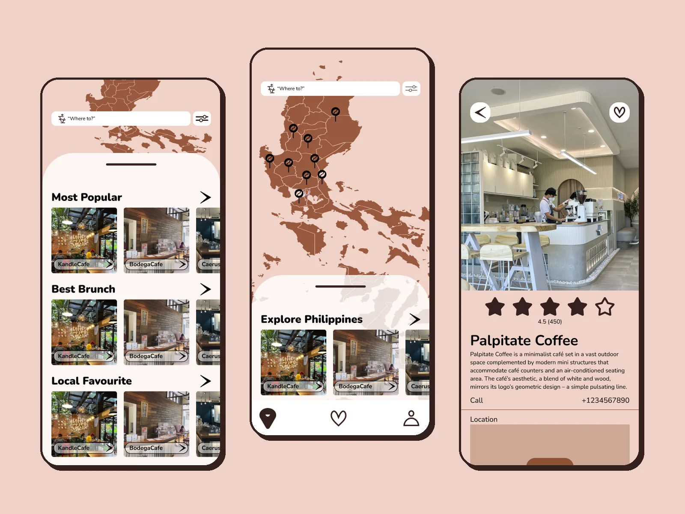
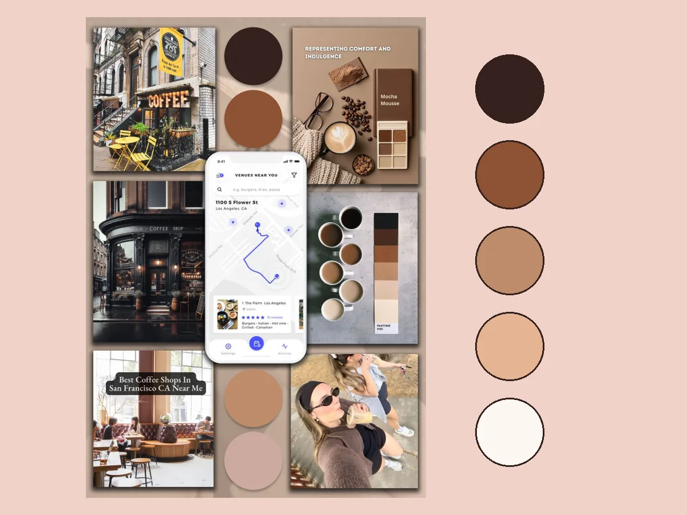
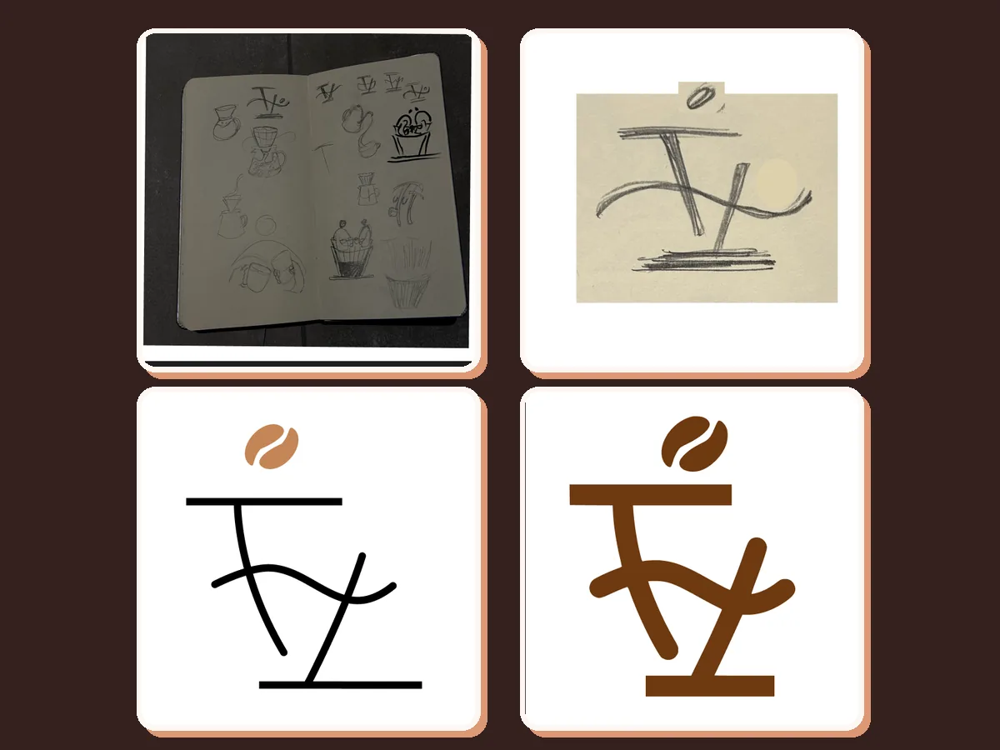
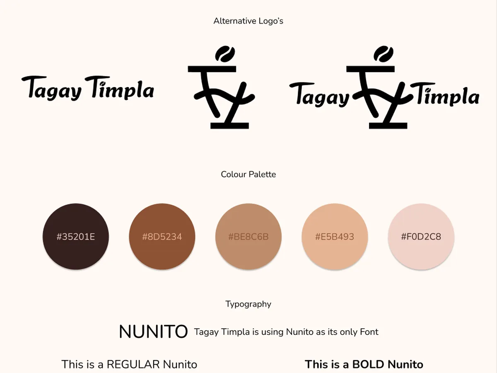
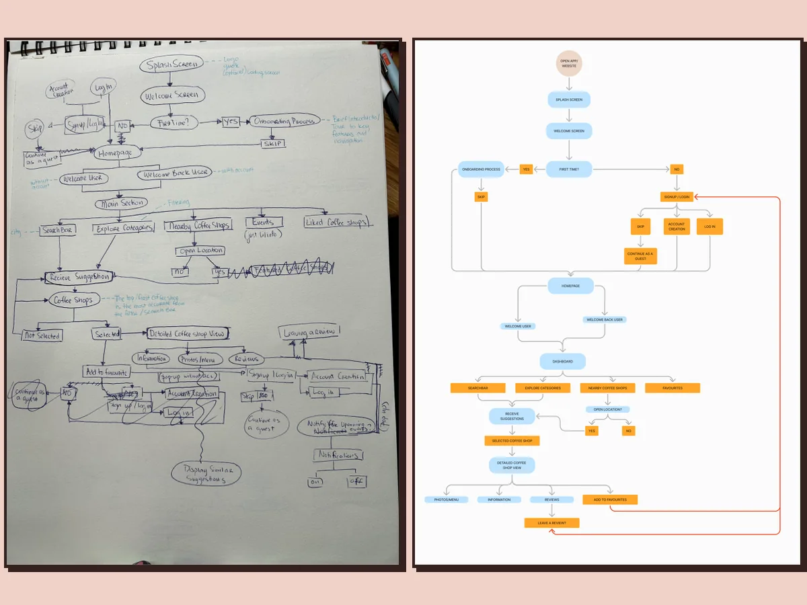
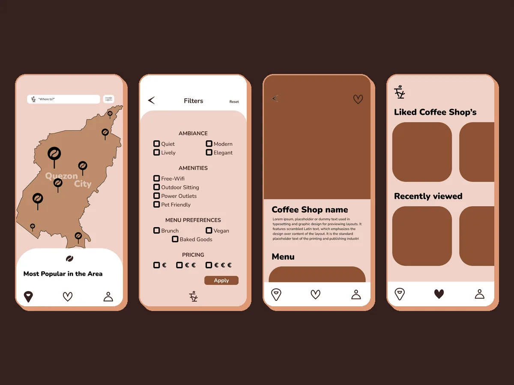
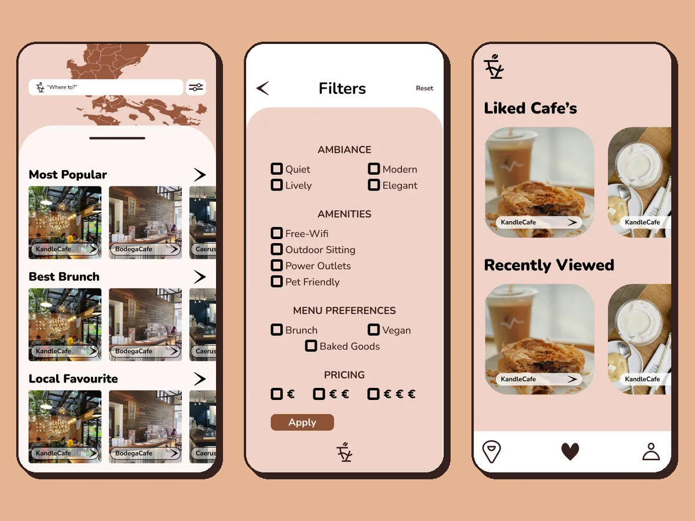
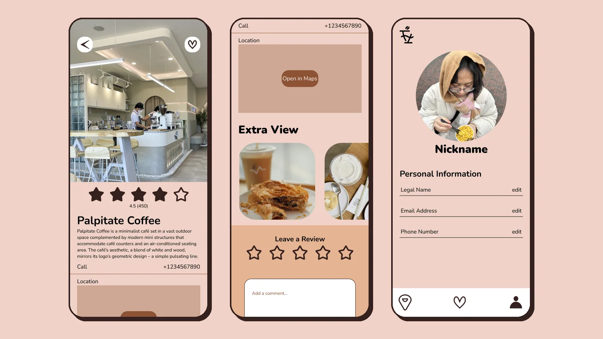

UI/UX · App design · Branding · First-year project
Tagay Timpla
An app for finding your next favourite coffee shop in Quezon City. Explore your city, one coffee shop at a time.

- Role
- Branding, logo & UI design
- Tools
- Figma, sketchbook
- Duration
- 3 months
- Team
- Solo · First-year school project
01 Problem
Quezon City is full of great coffee shops, but finding one that fits your mood is hard: a quiet spot to study, a place with brunch, a pet-friendly terrace or something affordable. Map apps show you everything at once. Tagay Timpla helps you discover cafés by what matters to you.
02 Process
-

Moodboard
I collected cosy cafés, coffee textures and map-based apps, and pulled a palette from them that goes from dark espresso to milky cream.
-

Logo
The mark started as thumbnails in my sketchbook: the T of Tagay and Timpla doubles as a coffee table, with a bean on top. I refined it from pencil to clean lines to the final bold version.
-

Brand guidelines
I put it together in a brand sheet: logo variations, five coffee browns and Nunito as the only typeface, so the app feels warm and consistent.
-

User flow
I drew the whole journey by hand first, then cleaned it up in FigJam: from opening the app, signing up or continuing as a guest, to picking a café, reading reviews and saving favourites. See the full user flow (opens in a new tab).
-

Wireframes
I mapped the app in flat wireframes first: a map of Quezon City with café pins, filters, a coffee shop page, favourites and a profile.
-

Final screens
Then I added real café photos and my own icon set, and organised the home page into lists like Most Popular, Best Brunch and Affordable.
03 Outcome
A Figma design of the full app: a map with café pins, curated lists, filters for ambiance, amenities, menu and price, café pages with ratings, photos and reviews, plus favourites and a profile.

Café names and photos are used as example content and belong to their owners.